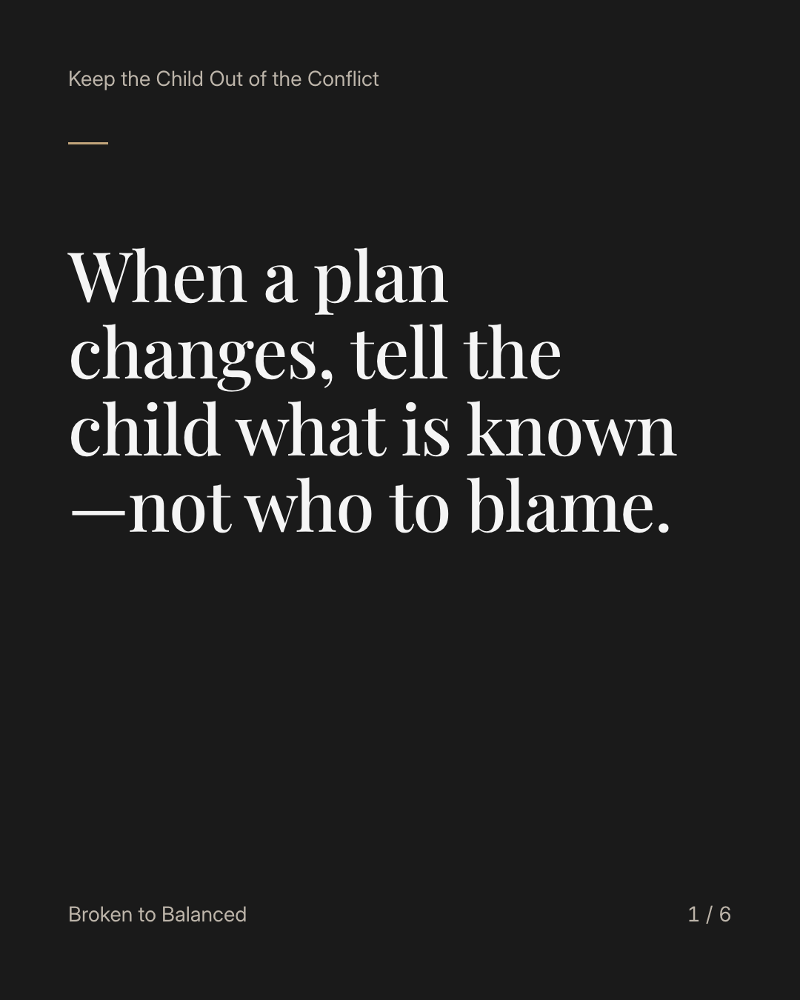
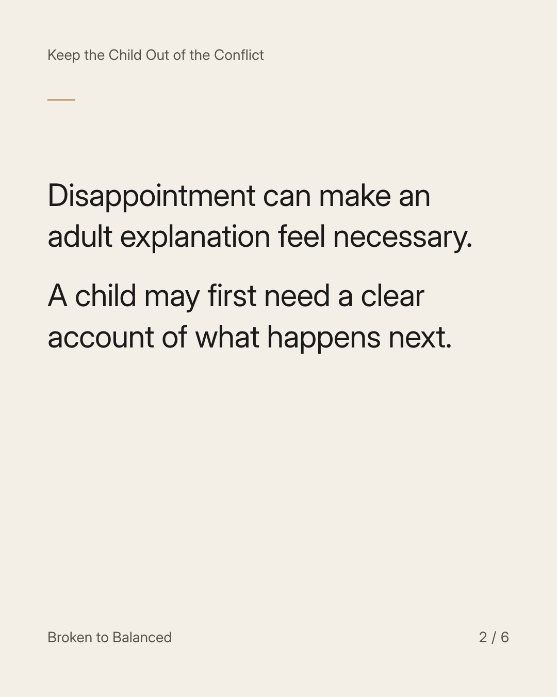
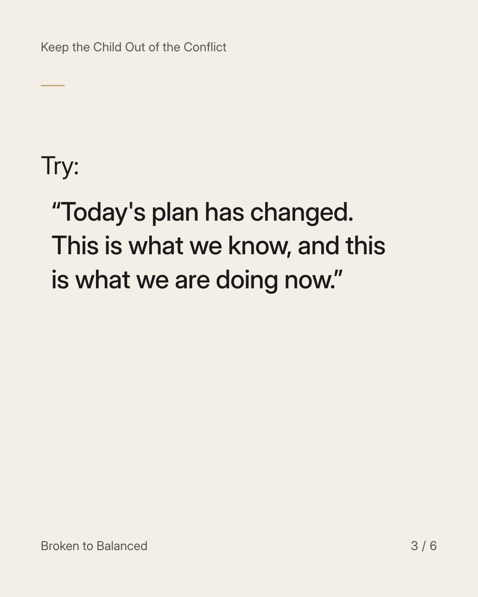
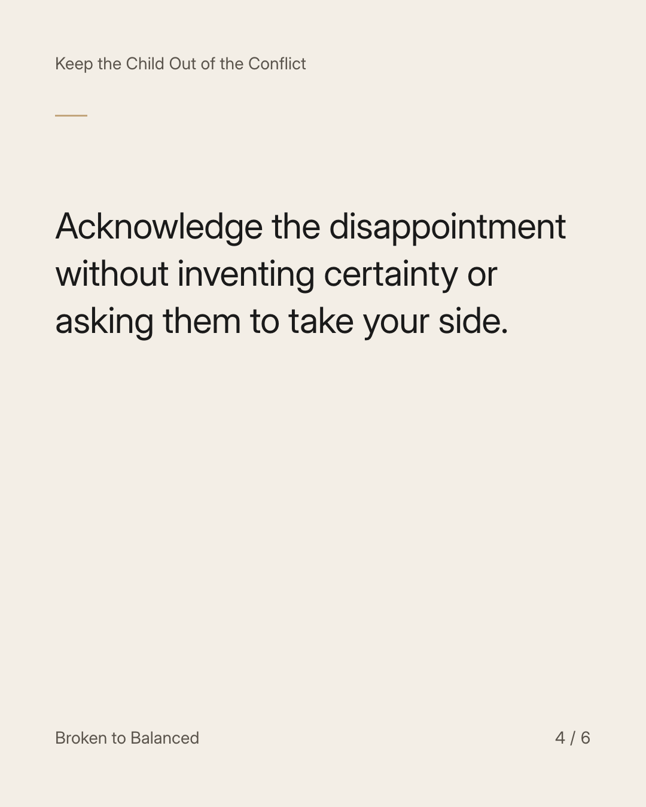
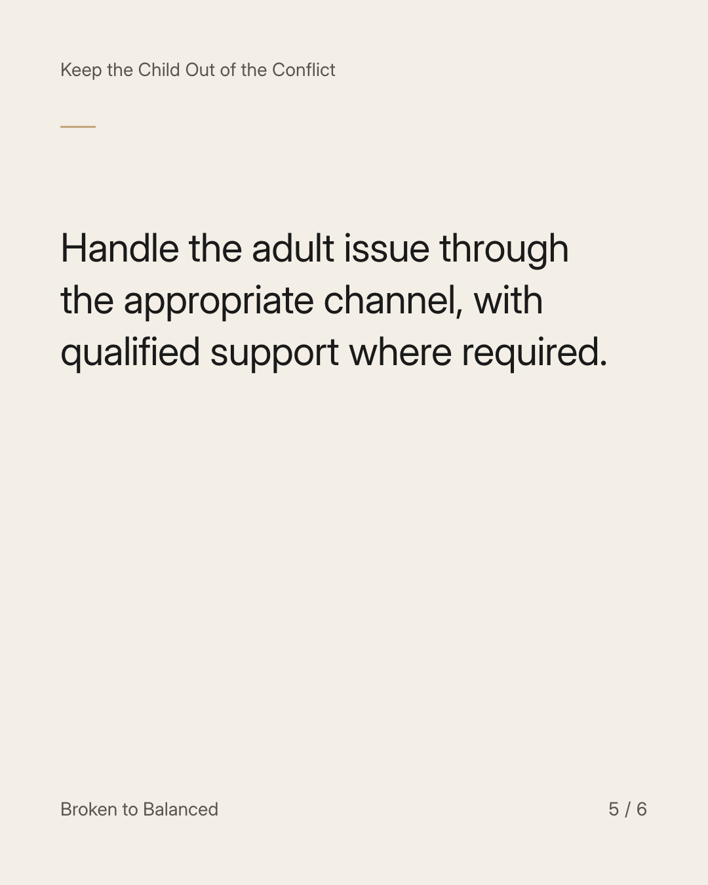
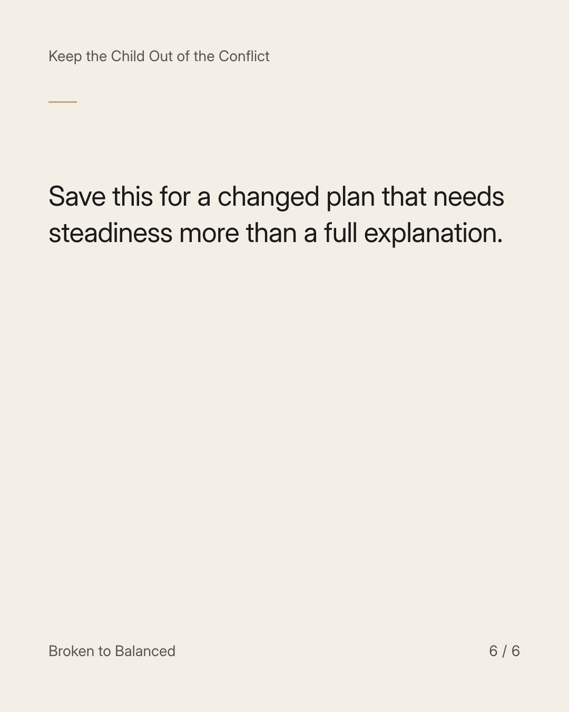

Exact text and accessibility text
When a plan changes, tell the child what is known—not who to blame.
Slide 1 of 6. When a plan changes, tell the child what is known—not who to blame.


Exact text and accessibility text
Disappointment can make an adult explanation feel necessary. A child may first need a clear account of what happens next.
Slide 2 of 6. Disappointment can make an adult explanation feel necessary. A child may first need a clear account of what happens next.


Exact text and accessibility text
Try: “Today's plan has changed. This is what we know, and this is what we are doing now.”
Slide 3 of 6. Try: “Today's plan has changed. This is what we know, and this is what we are doing now.”


Exact text and accessibility text
Acknowledge the disappointment without inventing certainty or asking them to take your side.
Slide 4 of 6. Acknowledge the disappointment without inventing certainty or asking them to take your side.


Exact text and accessibility text
Handle the adult issue through the appropriate channel, with qualified support where required.
Slide 5 of 6. Handle the adult issue through the appropriate channel, with qualified support where required.


Exact text and accessibility text
Save this for a changed plan that needs steadiness more than a full explanation.
Slide 6 of 6. Save this for a changed plan that needs steadiness more than a full explanation.
Exact caption
Plain-text fallback: select and copy the caption.